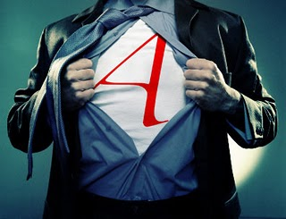
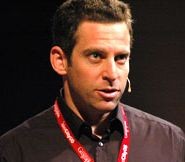

La primera carta de odio que recibí aquí en Sin Dioses me tomó por sorpresa. Al vivir en un mundo de proselitismo religioso, no creí que una página en la red sobre ateísmo concerniría a nadie. Entendía que pasaríamos desapercibidos. Han pasado casi nueve años desde entonces y las cartas continúan arribando; la publicación de ellas en la sección de la Edad Media ha disminuido un poco el furor, pero no lo acalla. Nos preguntan por qué dedicamos tanto tiempo a dios si no creemos en él (esa es una constante), nos recuerdan que nuestra alma arderá para siempre en el infierno o, con palabras misericordiosas, nos aseguran que estaremos en sus oraciones. La indignación es otra constante en sus continuas demandas. Una vez, durante una charla que daba para la Academia de Ciencias de mi país, un creyente interrumpió mi discurso con folletos sobre su dios mientras me acusaba de decir mentiras. Aquella inquietante perturbación también me tomó por sorpresa; ni siquiera estaba hablando de dios ni de religión, mi charla era sobre genes.
Pero la ciencia tiende a inquietar al religioso. Todos sabemos por qué. Desde que la observación y el pensamiento racional unieron fuerzas en la investigación científica, las explicaciones religiosas sobre el mundo han quedado atrás. Hoy, a pesar de que la evolución explica perfectamente el origen del ser humano, el religioso aún se opone a todas sus evidencias.

No le debo mi ateísmo a Richard Dawkins. Tampoco a Carl Sagan ni a Christopher Hitchens, mucho menos a Daniel Dennett o Michael Shermer, no tenía idea de quiénes eran ellos cuando descubrí que era atea. De hecho, los autores que despertaron mis neuronas ni siquiera eran incrédulos.
Ser madre tampoco me hizo atea, ya lo era antes; pero me obligó a buscar los medios para explicar mejor mi ateísmo; necesitaba afianzar mis ideas; era mi obligación ser coherente sobre mi forma de vivir pues mi hijo vendría al mundo en ella. Esta nueva responsabilidad me puso en marcha, obligándome a actuar: buscar un colegio laico, emprender conversaciones difíciles con profesoras evangelizadoras, escribir cartas a la directora y darle a él todas las evidencias que conozco sobre por qué somos ateos (muchas de ellas descubrí leyendo a esos nuevos ateos que menciono más arriba). Ahora me tildan de agresiva por ello, por ser coherente con mis ideas y expresarlas.
Es precisamente lo que encontré en una columna escrita por Caspar Melville en el periódico británico The Guardian y publicada en el blog La media hostia (http://lamediahostia.blogspot.com/). Melville, autodenominado ateo que proclama defender el nuevo ateísmo en el día y atacarlo en la noche (algo así como mi relación con las dietas) afirma que el nuevo ateísmo ofrece una visión simplista de la religión y, continúa, en su embate disfrazado de auxilio: “pero, seamos claros, no importa dónde decidamos ir, probablemente no estaríamos ahí si no hubiésemos tenido esos cinco años del impaciente, irascible, romo y descreído discurso del Nuevo Ateísmo que ahora tenemos que dejar atrás”.
¡Vaya con el profeta Melville!, no sólo insulta la inteligencia de grandes pensadores ateos (que no nuevos), sino que sentencia la muerte de un movimiento joven cuyo discurso me es imposible caracterizar como irascible ni obtuso. Mucho menos que pinte la religión de forma simplista.
Oponerse a la crítica franca de las religiones es condonar lo que continúan haciendo, machacar el derecho de todos a la libre expresión y colaborar con un concepto aberrante como la blasfemia. Es perfectamente normal que creyentes se tomen el tiempo para escribir cartas de odio a una página atea, que recurran al fraude y la mentira y al bloqueo del conocimiento científico en el mundo, alentando a la continua opresión de la mujer y otras minorías, pero si un ateo expresa su punto de vista: ‘bueno, obviamente somos impacientes e irascibles. Sencillamente irrespetuosos’.
Los primates hemos desarrollado emociones que nos impulsan a actuar de formas negativas o positivas con o sin la religión; lo racional es promover los rasgos que ayudan al bienestar del grupo e intentar cambiar y domar los negativos. No precisamente la especialidad religiosa. De hecho, si existen todos esos creyentes tan maravillosos, es porque ninguno sigue sus libros sagrados de forma literal y la mayoría ni siquiera los conoce; ser bondadosos es parte de su humanidad.
Y en cuanto a tener una visión simplista de la religión, pues por el contrario, la unión de la ciencia y el ateísmo nos devuelve una religión enriquecida por la genética y la neurología, diversificada por la psicología y la sociología evolutivas, diseccionada por una historia más objetiva, ya despojada del subjetivismo impuesto por los que tienen el poder. Hemos desnudado a la emperatriz y en nuestra sociedad ningún desnudo, por metafórico que sea, es simple; nuestra cultura es estrictamente antinudista.
En ese sentido, el ateísmo libre, que cada cual adopta porque no puede pensar de otra forma, suscita sentimientos de rechazo; una ocurrencia común en todo movimiento provocador: la gente teme abandonar el status quo. Millones de mujeres aún se oponen y niegan el feminismo, los mismos esclavos dudaron ante la valentía de los que se enfrentaron a sus opresores y todavía un sinnúmero de homosexuales defiende desde su incómodo armario, una heterosexualidad falsa que disfrazan de homofobia. Respetar las ideas de nuestros abuelitos no nos lleva al progreso.
Ahora bien, cada ser humano es una multitud, y no sólo bacteriana. Nuestro cerebro se debate todo el tiempo entre nuestros impulsos y lo que sabemos nos conviene, es una guerra que se complica con el desarrollo de nuestra corteza prefrontal y otras áreas ejecutivas y el crecimiento de nuestras sociedades. En ese sentido, muchos aseguran que las religiones logran controlar esos primitivos impulsos humanos y así aplicar el orden, con la mano dura de Dios, a una especie primitiva, contaminada por el instinto animal. ¿Ha dado eso resultado? ¿Somos verdaderamente una mejor especie porque la religión ha dominado al mundo? ¿Es la religión la dueña de la moral y los humanos los únicos en poseerla? ¿Creen ustedes que los seres humanos éramos incapaces de ayudarnos unos a los otros antes de desarrollar la religión?
La respuesta que nos brinda hoy el estudio de varias ramas científicas, incluyendo la neurología, la primatología y la sociología, es contundentemente negativa. No he nutrido el pensamiento de mi hijo con moral religiosa sino con firmes principios éticos que nacieron porque somos animales sociales y tenemos que vivir en grupos cada vez más grandes y diversos. Necesitábamos empatía; esos animales que la desarrollaban tendían a pasar más sus genes y prosperar.
No sólo eso, en la actualidad, el porcentaje de ateos en las cárceles del mundo es realmente ínfimo, sin embargo, entre científicos es notablemente alto, en esta página es posible encontrar esas y más estadísticas para Estados Unidos y otras partes del mundo. (http://www.freethoughtpedia.com/wiki/Percentage_of_atheists)
«Oponerse a la crítica franca de las religiones es condonar lo que continúan haciendo, machacar el derecho de todos a la libre expresión y colaborar con un concepto aberrante como la blasfemia»
Los religiosos afirman que un mundo secular sería caótico. Yo he crecido en un mundo religioso y no percibo ni orden ni justicia en él. Algunos argumentan que el ateísmo ha tenido su momento y que no ha funcionado tampoco; pero el ateísmo comunista no es ateísmo, es una oposición al orden religioso que imitó el mecanismo usado por los cristianos en el “Nuevo Mundo”: obligar a los demás a aceptarlo como dogma. No obstante, el ateísmo dogmático cae por su propio peso. No se trata de que un gobierno dictatorial te imponga cómo pensar, se trata de que los gobiernos te ofrezcan la libertad para pensar en el laicismo, pero eso es inadmisible para muchos. Como bien lo planteara Noam Chomsky, hasta en los sistemas democráticos el pensamiento libre es un peligro.
“Un estado totalitario puede satisfacerse con grados menores de alianza a las verdades requeridas. Es suficiente que las personas obedezcan; lo que piensen tiene una importancia secundaria. Pero en un orden de democracia política siempre está el peligro de que el pensamiento independiente sea traducido en acción política, por lo que es importante eliminar la amenaza desde la raíz”.
Por eso, Joseph Ratzinger y Mahmoud Ahmadinejad unen fuerzas contra los nuevos ateos, por eso nos catalogan ahora de agresivos, irascibles, obtusos. Nos atacan acusándonos de que parecemos religiosos, que somos tan irracionales y dogmáticos como ellos. ¿Curioso, no? Que ni siquiera eso los haga meditar.
“No es un accidente que Santo Tomás de Aquino pensara que los herejes deben ser asesinados y que san Agustín pensara que debían ser torturados también (pregúntese entonces si estos buenos doctores de la iglesia ¿no debieron de haber leído detalladamente el Nuevo Testamento como para descubrir allí que a lo mejor estaban errados?) Como una fuente de moralidad objetiva, la Biblia es uno de los peores libros que tenemos. De hecho, podría haber sido el peor si no contáramos también con el Corán”, escribe Sam Harris en la página de “Humanismo secularista” (http://www.secularhumanism.org/index.php?section=library&page=sharris_26_3).
Neurólogos como Harris y otros científicos en distintas ramas, creyentes o no, nos han devuelto un cerebro dotado de su propio armazón ético, que desarrolla ayudado por el medio y su interacción con los demás. No son características únicas en los humanos, ni siquiera en los primates. La moral no ha sido un regalo divino. Si lo fuera, los dioses nos hubieran dotado con un sistema mucho más sofisticado y los “médiums” que trabajan directamente para ellos no cometieran actos amorales. Los dioses que gobiernan hoy la vida de la mayoría de los humanos sobre el planeta poseen una ética que deja mucho que desear. Por eso concuerdo con el primatólogo holandés Frans de Waal cuando dice:
“Quizás sea sólo yo, pero desconfiaría de cualquiera cuyo sistema de creencias es lo único que se interpone entre ellos y conductas repulsivas. ¿Por qué mejor no asumir que nuestra humanidad, incluyendo ese autocontrol que se necesita para mantener una sociedad habitable, ya vino integrada en nosotros? ¿Realmente creen que nuestros ancestros no se ayudaban entre sí o se quejaban de injusticias antes de conocer estas religiones organizadas que claman ser dueñas de la moral. La moralidad humana es mucho más vieja que las religiones y las civilizaciones”.
Nos reservamos el derecho a no servir a metafísicos
Bye, bye, dios
A otro tipo de creyentes, entre ellos agnósticos, les incomoda el reduccionismo en el discurso del ateo. La navaja de Occam los corta profundamente y se molestan. En sus más recientes publicaciones, Stephen Hawkins y Sam Harris declaran muerta a la filosofía y erradican de sus discursos, el primero basado en la astrofísica y la cuántica y el segundo en la neurología, la necesidad de los dioses. Su literatura intenta llegar a más personas y desmitificar el discurso científico como aburrido, pero su indiferencia hacia la filosofía y cualquier asomo de metafísica ha desconcertado a muchos que se levantan en protesta.
“Estoy convencido de que cada aparición de términos como metaética, deontología, incognitivismo, antirrealismo o emotivismo, etc, directamente aumenta la cantidad de aburrimiento en el universo”, bromea Harris en su más reciente libro, The Moral Landscape.
Llegar a explicaciones sobre el comportamiento humano a través de las distintas ramas científicas no es reducirlo a términos peyorativos. Identificar al individuo como la suma de los mecanismos que producen su conciencia no es denigrarlo, especialmente si esta reducción viene acompañada por evidencias. Pero la resistencia es fuerte y persistente; es problemático aceptar lo nuevo y pensar de forma no convencional.
Evidentemente, los seres humanos no necesitamos de las religiones para crear divisiones entre la especie. Vivimos bajo emociones encontradas e impulsos ante los cuales cedemos una y otra vez. “El simio vestido”, nos llaman los sociólogos darwinistas; “un avanzado cromagnon víctima de su medio”, nos dicen los deterministas culturales. Para mí que somos una combinación inseparable de ambas cosas que se retroalimenta constantemente; su producto innegable. Por eso es tan difícil pensar más allá de la generación que te toque vivir, más allá de tu medio; aunque no quiere decir que no podamos ni debamos intentarlo.
Que el Papa y el presidente de Irán le declaren la guerra a los ateos es un punto a favor del laicismo y evidencia lo peor en la religión; también realza los efectos directos de este nuevo ateísmo que tanto desean denigrar y tergiversar. Los ateos, como los creyentes, somos todos distintos. Encontrarás por ahí algunos más pasivos que otros, también los habrá más o menos estudiados, más o menos informados y más o menos escépticos, pero todos estamos de acuerdo en que el ateísmo no pretende suplantar los dogmas religiosos, el ateísmo dogmático es ignorante y huele a política.
Stephen Jay Gould no pertenecía a los nuevos ateos. El famoso paleontólogo autor de varios divertidos e interesantes libros, entre ellos Bully for Brontosaurus, pensaba que la religión y la ciencia debían vivir en mundos paralelos, una encargándose del crecimiento moral y espiritual de los individuos y la otra explicando a través de las evidencias el mundo donde vivimos. El problema con esa forma de pensar es evidente. Dawkins la caracterizó de puro sin sentido ya que muchas religiones ofrecen explicaciones sobre el origen de la vida, del ser humano y del Universo. Explicaciones basadas en fábulas indefendibles que llevan milenios contraponiéndose a las observaciones y evidencias científicas, bloqueando su estudio en las escuelas y promoviendo este tipo de ideología como la única válida. Hoy en día, como es lo usual, si clamas desacuerdos ante esta visión y te agarras de la ciencia como defensa te tachan de agresiva, de nueva atea, irascible, obtusa e impaciente; en otras palabras, todos somos libres de expresarnos, a menos que pienses distinto a mí.
Volver al índice de la Lupa Herética
© 2008-2023 Glenys Álvarez y Sin Dioses. Prohibida la reproducción con fines comerciales.
Comentarios
Comments powered by Disqus